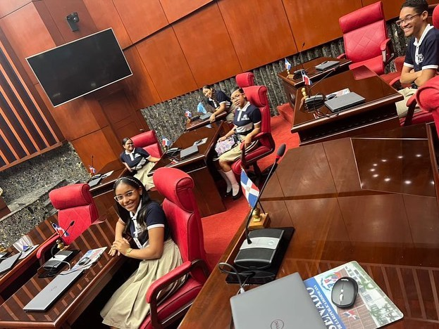
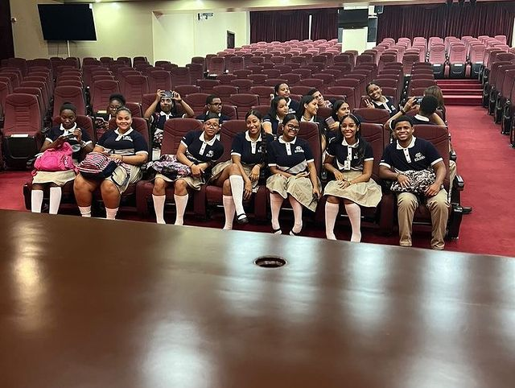

Los estudiantes de nuestro Instituto recibieron una invitacion del Senado de la Republica para asistir al Congreso Nacional.
Agradecemos al @senadord por la invitación a nuestros estudiantes de último año , para conocer la estructura del poder legislativo.
El Congreso Nacional legisla y fiscaliza en representación del pueblo, le corresponden en consecuencia: 1) Atribuciones generales en materia legislativa: a) Establecer los impuestos, tributos o contribuciones generales y determinar el modo de su recaudación e inversión; b) Conocer de las observaciones que el Poder Ejecutivo haga a las leyes;
